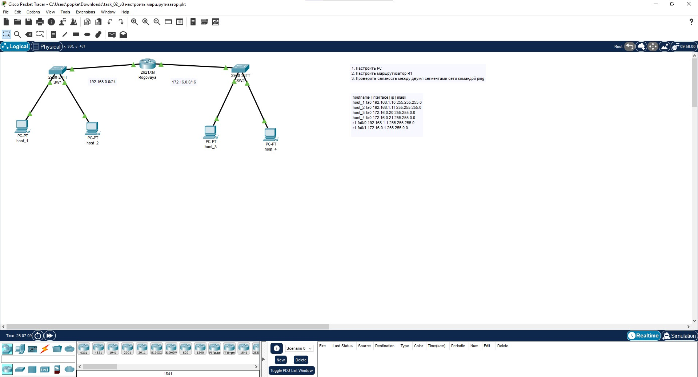
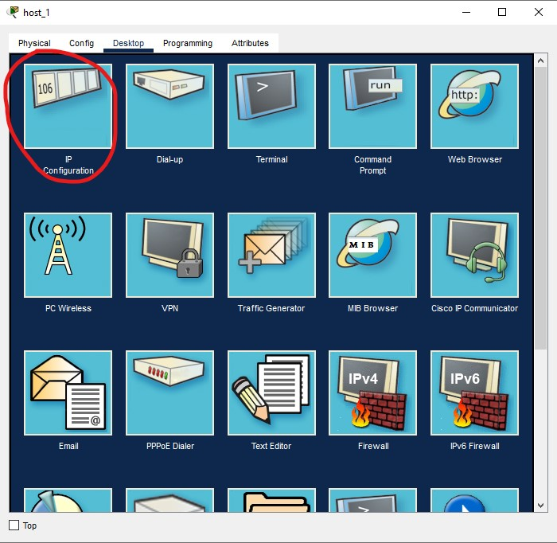
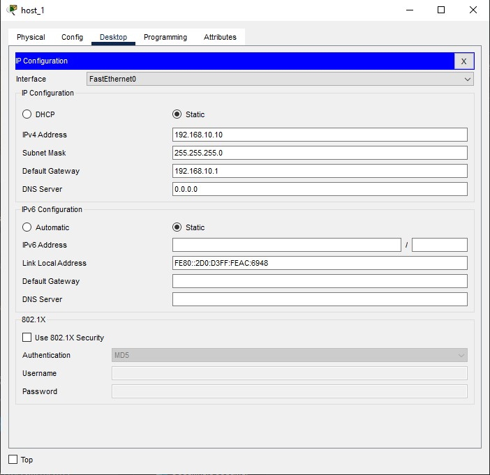
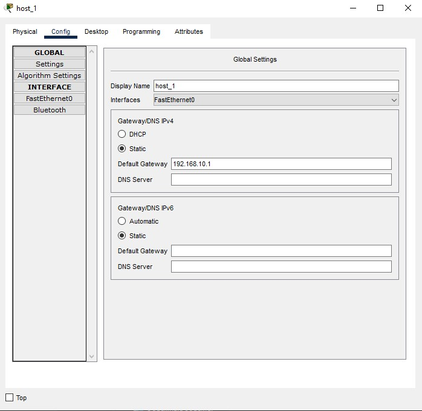
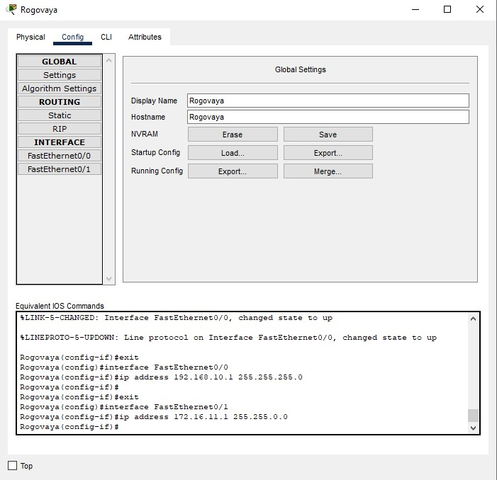
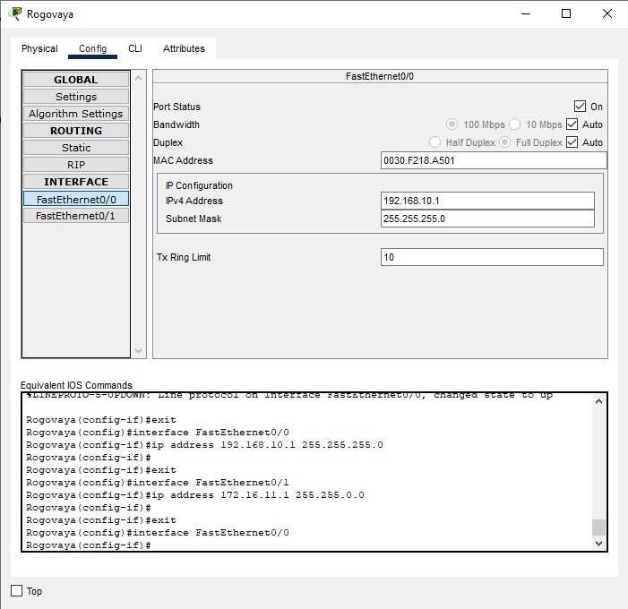
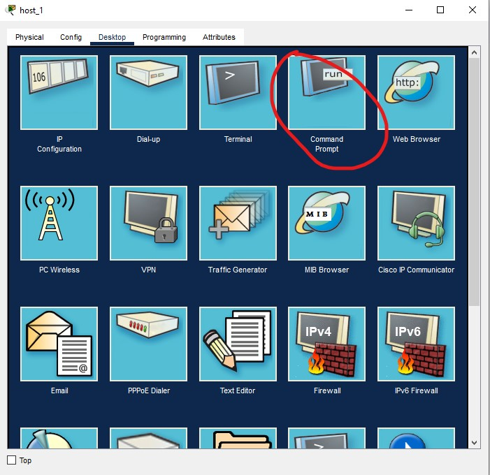
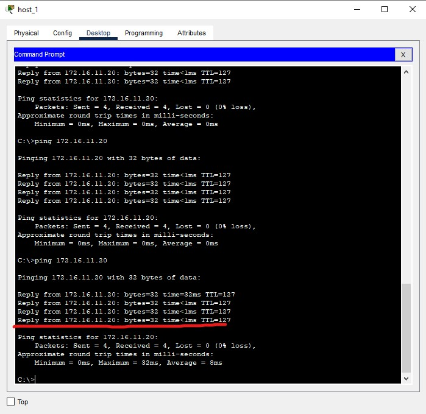

Отчёт
· Полное изображение топологии

Полное изображение топологии
· Снимки экрана с комментариями

Нажатием на иконку пк с именем host_1 открываем меню и выбираем вкладку Desktop, переходим в IP Configuration


В строку IPv4 Address вводим ip адрес компьютера, в качестве 3го октета используя номер по порядку в группе, и маску подсети. Также устанавливаем Default Gateway чтобы можно было направить трафик через маршрутизатор в другие сети. Так проделываем со всеми 4мя пк с нужными ip и масками подсети, Default Gateway. Во второй сети комутатора FastEthernet0/1 поднимаем число 3го октета IPv4 на 1 тк это другая подсеть. В меню Config по кнопке Settings можно поменять название устройства.

Нажатием на иконку маршрутизатора R1 меняем его название на фамилию во вкладке Config в разделе Settings.

В разделе INTERFACE выбираем подсеть FastEthernet0/0 и в пунктах IPv4 Address и Subnet Mask вводим необходимые значения, в 3м октете меняя значение на порядковый номер в группе. Так же делаем и с FastEthernet0/1 (второй подсетью). Когда мы настраивали пк в Default Gateway мы указывали именно тот шлюз , который сейчас мы указываем у маршрутизатора для настройки подсети. Теперь мы можем взаимодействовать между подсетями.

Чтобы проверить связаность между сетями командой ping откроем Command line interface (CLI) во вкладке Desktop пункт Command Prompt.

Переместим курсор в поле консоли и кликнув по ней вводим команду "ping 172.16.11.20". Так как мы выполняем команду с пк host_1 первой подсети , то образаемся мы ко второй подсети. Нажимаем Enter и команда выполняется.

После некоторого ожидания мы видем об успешном ответе о получении 4 из 4 отправленых пакетов. Связь была проверена. Топология работает.